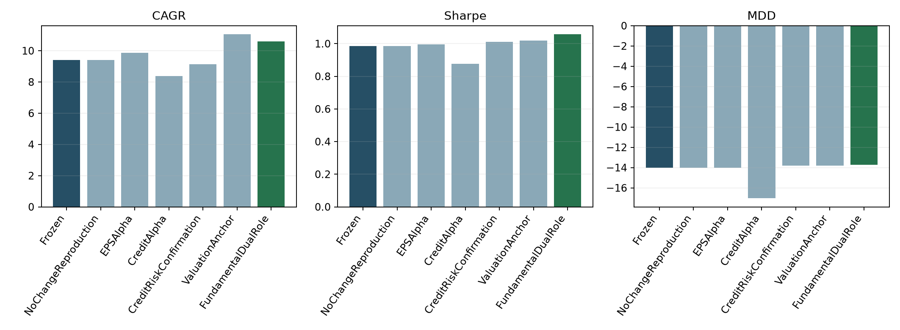
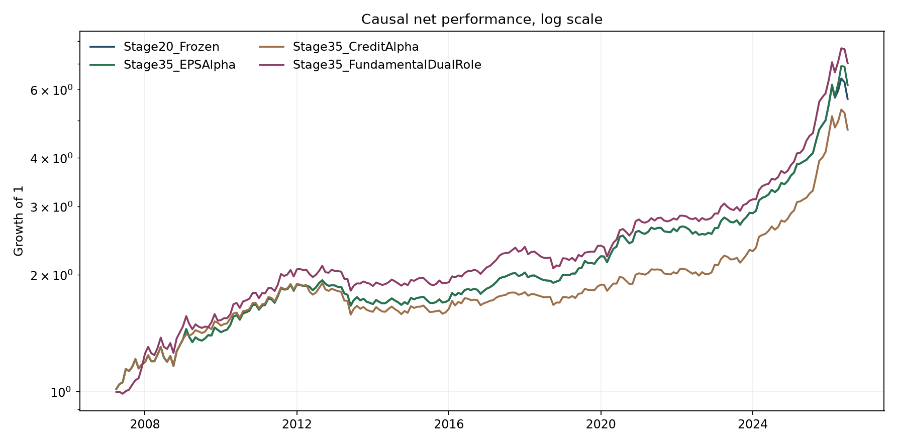
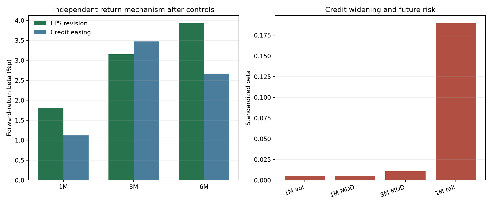

0. 한눈에 보는 결론
Stage35의 핵심은 신호를 많이 넣는 것이 아니다. 서로 다른 경제적 역할을 가진 세 정보만 기존 Stage20 엔진에 제한적으로 연결했다. EPS revision과 이익수익률 갭은 KODEX200 기대수익을 보완하고, AA− 회사채 스프레드 확대는 기존 VKOSPI 방어 신호와 주식 위험 추정치를 확인한다.
Stage35_FundamentalDualRole. EPS와 밸류에이션은 기대수익 채널에, 신용은 위험 채널에만 사용한다. 무가중 신용 수익률 알파는 성과가 악화되어 최종 전략에서 제외했다.1. Stage35의 연구 질문
Stage32~33의 옵션 연구는 WingAsym이 수익률 방향 알파라기보다 VIX6와 중복되는 공포 정보라는 결론에 가까웠다. Stage35는 같은 옵션 신호를 더 가공하지 않고, 경제적 원천이 다른 데이터로 이동했다.
애널리스트의 12개월 선행 EPS 수정과 주식 이익수익률의 국채 대비 매력도가 향후 주식 기대수익을 보완하는가?
AA− 회사채 조달 스프레드 확대가 VKOSPI가 포착한 스트레스의 신뢰도와 주식 위험도를 확인하는가?
이 질문은 하나의 복잡한 예측모형으로 합치지 않았다. 기대수익 신호와 위험 신호를 분리하면 설명이 쉬워지고, 같은 위험 정보를 μ와 Σ 양쪽에 무분별하게 중복 반영하는 실수를 줄일 수 있다.
2. 전략의 전체 구조
이 구조에서 Stage35가 바꾸는 부분은 ④뿐이다. ①~③과 ⑤의 핵심 규칙은 Stage20을 동결해 사용한다. 따라서 성과 차이는 새 펀더멘털 입력이 기존 엔진의 결정을 어떻게 바꿨는지로 귀속하기 쉽다.
3. Stage20에서 상속한 기반
3.1 거시 국면은 로지스틱 회귀가 아니다
현재 Stage35 코드가 호출하는 build_macro_probabilities()는 균형 L2 로지스틱이나 SJM을 쓰지 않는다. 각 거시지표를 직전까지의 expanding empirical percentile로 바꾸고, 성장 3개와 물가 3개를 각각 동일가중 평균한다. 별도의 학습 라벨, 85:15 확률 혼합, lookback 선택, sigmoid 계수는 없다.
pI = mean(rankexp(CPI YoY), rankexp(PPI YoY), rankexp(Import Price YoY))
| 국면 | 확률 공식 | 대표 경제 상태 |
|---|---|---|
| Goldilocks | pG(1−pI) | 성장 강함·물가 낮음 |
| Overheating | pGpI | 성장 강함·물가 높음 |
| Slowdown | (1−pG)(1−pI) | 성장 약함·물가 낮음 |
| Stagflation | (1−pG)pI | 성장 약함·물가 높음 |
대상 월 t에는 t−1월까지 알려진 거시값만 사용한다. 이 때문에 2007-04부터 별도 분류기 훈련기간 없이도 확률을 만들 수 있다. “학습을 안 했는데 어떻게 예측하는가?”에 대한 답은, 이 버전의 국면 엔진이 감독학습 분류기가 아니라 과거분포 안에서 현재 거시 수준의 상대 위치를 확률처럼 해석하는 규칙 기반 확률화이기 때문이다.
3.2 국면 조건부 평균·공분산
네 국면을 hard label로 하나만 고르지 않는다. 과거 각 월도 네 확률을 모두 갖고, 현재 확률로 국면별 평균과 공분산을 혼합한다. 유효표본이 적은 국면은 12개월을 prior sample로 두는 신뢰도 계수로 무조건부 모멘트 쪽으로 수축한다.
μr = credibilityr μ̂r + (1−credibilityr) μ̂all
μmacro,t = Σr pr,t μr
VKOSPI stress와 recovery는 국면별 중심화 단변량 OLS 기울기로 기대수익을 조정한다. 약한 관계가 과도한 신호를 만들지 않도록 기울기에 자체 R²를 곱한다. KODEX200과 USO의 스트레스 기울기는 0 이하, 회복 기울기는 0 이상이라는 고정된 경제적 부호만 적용한다.
3.3 Stage20 기술적 신뢰도
- K-ratio 126거래일: 가격 추세의 방향과 일관성.
- Wilder ATR 14일: 최근 가격 범위의 위험도. 자산별 인과적 percentile로 변환.
- 가격 RSI 14일: KODEX200의 방향 강도.
- 거래량 RSI 14일: KODEX200 추세에 거래 참여가 동반되는지 확인.
μfiltered,i = μ̄macro + confidencei(μmacro,i−μ̄macro)
기술 신호가 거시 상대방향에 동의하면 거시 기대수익 차이를 유지하고, 반대하면 중립 평균 쪽으로 축소한다. 기술 신호가 새로운 독립 알파를 직접 더하는 방식이 아니다.
4. 원천 데이터와 열 매핑
| 파일 | 읽기 규칙 | 원본 열 | Stage35 내부명 | 사용 역할 |
|---|---|---|---|---|
| 260829_fwdPE.EPS.rev.xlsx | header=13, 앞 5열 | 날짜 | date | 시점 키 |
| 동일 | 동일 | 12M Forward P/E | forward_pe_12m | earnings yield gap |
| 동일 | 동일 | 12M Forward EPS | forward_eps_12m | 21일 수정률 교차검증 |
| 동일 | 동일 | EPS 1주 수정률 | eps_revision_1w_pct | 보존, 최종 비거래 |
| 동일 | 동일 | EPS 1개월 수정률 | eps_revision_1m_pct | 최종 EPS 신호 |
| 260829_국고채.회사채.xlsx | header 없음, 14행 skip, 앞 11열 | 국고 1·2·3·5·10·20·30·50년 | ktb_*_pct | 3년 spread, 10년 valuation |
| 동일 | 동일 | 회사채 AA− 무보증 3년 | corp_aa_minus_3y_pct | 주 신용 위험 신호 |
| 동일 | 동일 | 회사채 BBB− 무보증 3년 | corp_bbb_minus_3y_pct | 강건성 진단만 |
두 파일은 날짜를 datetime으로 변환하고, 숫자가 아닌 셀은 결측치로 처리하며, 중복 날짜는 마지막 행을 남긴다. 데이터는 outer join으로 합쳐 원본의 서로 다른 영업일 범위를 억지로 잘라내지 않는다.
outputs/normalized_earnings_credit_daily.csv로 별도 저장한다.5. 일간 정규화와 파생변수
| 파생변수 | 공식 | 경제적 해석 | 최종 거래 사용 |
|---|---|---|---|
| computed_eps_revision_21d_pct | 100 × Δ21 log(Forward EPS) | EPS level에서 재구성한 1개월 근사 수정률 | 아니오, 공급자 필드 검증 |
| aa_credit_spread_pctpt | AA− 3Y − KTB 3Y | 우량기업의 국채 대비 조달 프리미엄 | 예 |
| bbb_credit_spread_pctpt | BBB− 3Y − KTB 3Y | 저신용 기업 조달 프리미엄 | 진단만 |
| quality_spread_pctpt | BBB− 3Y − AA− 3Y | 신용등급 간 위험가격 | 진단만 |
| aa_spread_widening_20d_pctpt | Δ20 obs AA spread | 최근 약 한 달의 funding stress 변화 | 예 |
| yield_curve_10y_minus_3y_pctpt | KTB 10Y − KTB 3Y | 국채 곡선 기울기 | 진단 |
| earnings_yield_gap | 1 / Forward PE − KTB10Y / 100 | 주식 이익수익률의 장기국채 대비 상대 매력 | 예 |
최종 EPS 신호는 공급자가 제공한 1개월 수정률을 사용한다. Forward EPS level 자체는 79.12%의 관측치가 직전 값과 같아 일별로 직접 매매하면 “새 정보가 없는 날”을 지나치게 반복할 위험이 있다. 그래서 월말 최신 완전관측치만 가져온다. 공급자 수정률과 level에서 재계산한 21일 수정률 상관은 0.458로, 대체 가능하다고 보기 어려워 재계산값은 교차검증에만 남겼다.
신용 spread의 20은 달력 20일이 아니라 20개 유효 관측치 차분이다. 임의의 17일·23일 탐색을 하지 않았고, “약 한 거래월의 자금조달 여건 변화”라는 사전 경제적 의미로 고정했다.
6. 월간 시점 정합성: 미래정보를 어떻게 막았나
각 일간 데이터의 signal month에서 EPS 수정률·AA spread 변화·earnings yield gap이 모두 존재하는 마지막 날짜를 선택하고, 그 값을 다음 target month의 투자에 사용한다.
백테스트 루프에서도 returns.index < month, probabilities.index < month 조건으로 과거만 잘라낸다. 현재 월의 실현 수익률은 가중치가 결정된 후에만 읽는다.
7. 인과적 표준화
EPS·credit·valuation의 크기는 시대별 단위와 변동폭이 다르다. Stage35는 전체 표본 평균과 표준편차를 쓰지 않고, 현재 관측치를 제외한 과거 60개월 이상으로만 z-score를 계산한다.
def _causal_zscore(series):
prior = series.shift(1)
mean = prior.expanding(min_periods=60).mean()
std = prior.expanding(min_periods=60).std(ddof=1)
return (series - mean) / std.where(std > 0)현재치를 평균·표준편차 계산에서 제외하는 이유는, 이번 달의 극단값이 자기 자신의 기준을 바꾸는 것을 막기 위해서다. 또 60개월 전에는 신호를 0으로 억지 채우지 않고 결측으로 두므로, 충분한 이력이 쌓이기 전 월은 비교 가능한 백테스트 구간에서 제외된다.
신용 위험 강도는 z-score가 아니라 causal expanding midrank도 함께 사용한다. 이는 과거 관측 중 현재 widening의 상대 위치를 0~1로 나타낸다. 분포 꼬리가 두꺼워도 극단 z가 과도한 배율로 이어지지 않는 장점이 있다.
8. EPS revision 알파
8.1 경제적 아이디어
12개월 선행 EPS 전망의 상향 수정은 기업 이익 전망이 개선되고 있다는 직접적인 정보다. 가격 모멘텀과 달리 기업가치의 현금흐름 축에서 출발한다. 다만 “EPS가 올랐으니 주식 비중 +10%” 같은 임의 규칙을 두지 않고, 과거에 표준화된 수정률 1단위가 다음 달 KODEX200 수익률과 얼마나 연결됐는지를 expanding 방식으로 추정한다.
8.2 계수 추정
ΔμEPS,t = β̂EPS,t · zEPS,t
_nonnegative_univariate_slope()는 과거 feature를 그 과거 구간 안에서 표준화한 후 단변량 slope를 계산하며, 표본이 60개월보다 적거나 분산이 0이면 0을 반환한다. 음의 계수는 0으로 자른다. 이는 “이익 전망 상향은 기대수익에 비음(-)의 기여를 하지 않는다”는 고정 부호 prior이며, 결과를 보고 부호를 뒤집지 않는다.
history = output.index[output.index < month]
eps_slope = nonnegative_slope(
eps_revision_1m_pct[history],
KODEX200_return[history]
)
eps_mu = eps_slope * current_eps_revision_z9. 밸류에이션 앵커
9.1 신호 정의
Forward P/E의 역수는 주식의 선행 이익수익률이다. 여기서 10년 국고채 수익률을 빼면, 채권 대비 주식이 제공하는 이익수익률 여유를 얻는다. 값이 클수록 장기적인 주식 기대수익 매력이 높다는 가설이다.
9.2 왜 12개월 미래수익률을 쓰나
밸류에이션은 다음 달 방향을 맞히는 속도 신호보다 느린 기대수익 앵커에 가깝다. 따라서 과거 EYGap과 향후 12개월 KODEX200 복리수익률 사이의 단변량 기울기를 추정한다. 현재 월에 미래 12개월 수익률이 아직 완성되지 않은 표본은 절대 학습에 넣지 않는다.
β̂VAL,t = max{ slope[z(EYGap)s → Rs:s+12], 0 }
ΔμVAL,t = β̂VAL,t · z(EYGap)t / 12
12개월 누적 기대수익 계수를 월간 최적화 단위와 맞추기 위해 12로 나눈다. 정확한 복리 월환산이 아니라, 장기 기대수익 효과를 월별 μ에 균등 분배하는 단순하고 고정된 근사다.
10. 회사채 신용 위험확인
10.1 주 신호
Wideningt = CreditSpreadt − CreditSpreadt−20obs
우량 회사채의 국채 대비 spread가 최근 한 달 확대됐다는 것은 기업 자금조달 여건과 유동성 프리미엄이 악화됐다는 뜻이다. VKOSPI가 주식·옵션시장의 공포를 읽는다면, credit widening은 현금채권시장에서 그 공포가 실물 조달 위험으로 번지는지 확인한다.
10.2 기대수익 위험확인
mstress,t = 2qcredit,t
μstress,K200,tconfirmed = mstress,t · μstress,K200,tVKOSPI
credit rank가 0.5일 때 배율은 1이므로 기존 VKOSPI 조정을 그대로 둔다. widening이 과거 대비 매우 작으면 배율이 0에 가까워져 VKOSPI 방어의 강도를 낮추고, 매우 크면 최대 약 2배로 강화한다. 새 bearish alpha를 만드는 대신 기존 stress adjustment의 신뢰도를 조정한다.
10.3 분산 위험확인
Dcredit[K200,K200] = √vcredit,t
Σfinal = Dcredit Σtech Dcredit
대각 스케일링을 쓰기 때문에 KODEX200 분산은 v배, KODEX200과 다른 자산의 공분산은 √v배가 된다. 단순히 대각원소 하나만 바꾸는 것보다 공분산 행렬의 양의 준정부호 구조를 유지하기 쉽다.
11. 탈락한 Credit Alpha: 왜 음의 결과도 남겼나
신용 easing을 양의 주식 기대수익 알파로 직접 더하는 실험도 별도 경로로 실행했다.
회귀에서는 3개월과 6개월의 양의 관계가 보였지만, 실제 월간 자산배분에 직접 μ로 연결하자 성과가 악화됐다.
| 경로 | CAGR | Sharpe | MDD | 평균 turnover | 판정 |
|---|---|---|---|---|---|
| Stage20 | 9.397% | 0.987 | −14.015% | 2.681% | 기준 |
| CreditAlpha | 8.370% | 0.875 | −17.024% | 4.896% | 탈락 |
가능한 이유는 세 가지다. 첫째, 신용 easing과 다음 달 수익률의 시차가 월간 μ로 쓰기에 불안정할 수 있다. 둘째, VKOSPI stress/recovery가 유사 정보를 이미 반영해 중복될 수 있다. 셋째, 기대수익 변화가 잦아 turnover와 비용을 키웠다. Stage35는 이 결과를 보고 계수·부호·문턱을 다시 찾지 않고, 신용의 역할을 사전에 설명 가능한 위험 확인으로 제한했다.
12. 최종 기대수익 결합 순서
계산 순서는 중요하다. 같은 숫자라도 어디에 더하고 어떤 단계에서 필터링하느냐에 따라 의미가 달라진다.
- 국면 조건부
macro_expected_return과 VKOSPIstress_return_adjustment를 각각 얻는다. - 기술 방향으로 macro 부분만 중립 평균 쪽으로 축소한다.
- 최종 모드에서는 KODEX200의 filtered macro μ에 EPS μ와 valuation μ를 더한다.
- KODEX200의 기존 VKOSPI stress μ에는 credit multiplier를 곱한다.
- 수정된 filtered macro와 stress adjustment를 합친다.
filtered_macro[KODEX200] += eps_mu + valuation_mu
stress_adjustment[KODEX200] *= credit_stress_multiplier
expected_return = filtered_macro + stress_adjustmentEPS와 valuation은 기술 필터 뒤에 들어간다. 즉 K-ratio나 RSI가 펀더멘털 신호를 다시 약화시키지 않는다. 이는 기술 신호가 “거시 상대수익률 전망의 현재 가격 확인” 역할이고, EPS·valuation은 별도의 펀더멘털 출처라는 설계다.
13. 최종 공분산 결합 순서
- 국면별 과거 수익률로 macro covariance를 추정한다.
- 현재 VKOSPI stress 점수만큼 고스트레스 공분산과 혼합한다.
- Stage20 ATR percentile로 각 자산의 분산·공분산 축을 확대한다.
- Stage35 credit rank로 KODEX200 축을 한 번 더 확대한다.
- 수치오차로 생긴 음의 고유값은 매우 작은 양의 floor로 보정한다.
Σtech = DATRΣVKOSPIDATR
Σfinal = DcreditΣtechDcredit
따라서 신용 악화는 단순히 “주식을 팔아라”가 아니라, 동일한 기대수익이어도 KODEX200이 최적화에서 더 많은 위험예산을 소비하도록 만든다. 변동성 13%와 CDaR −16% guard가 가까운 달에는 실제 주식 비중 감소로 이어질 가능성이 크다.
14. SLSQP 목적함수
Stage35는 Sharpe 자체를 직접 최대화하지 않는다. 월간 기대수익에서 분산, 과거 하방준분산, 예상 거래비용을 뺀 효용을 최대화한다. 구현상 SciPy의 minimize가 최소화 문제를 풀기 때문에 음의 효용을 목적함수로 넘긴다.
objective(w) = −U(w)
| 항 | 코드 계산 | 역할 |
|---|---|---|
| 기대 월수익 | w′μ | 수익 기회 보상 |
| 분산 벌점 | 0.5 × w′Σw | 양방향 변동성 억제 |
| 하방준분산 | mean(min(Rw,0)²) | 과거 음의 수익만 추가 벌점 |
| 예상 거래비용 | weight change 기반 | 작은 기대수익 차이로 잦은 교체 방지 |
expected_annual_log_growth = 12(μp−0.5σ²p)도 진단값으로 저장하지만, 별도의 CAGR 계수를 또 목적함수에 중복 추가하지 않는다. 현재 효용의 기대수익과 분산 항은 로그성장 근사의 핵심을 이미 포함한다.
expected_annual_log_growth는 추정 μ·Σ로 계산한 사전 근사치다. 둘은 같은 값이 아니며 후자를 실제 CAGR 보장으로 해석하면 안 된다.15. 제약조건과 경제적 의미
| 제약 | 수식 / 값 | 설명 |
|---|---|---|
| 완전투자 | Σwi = 1 | 현금을 별도 자산으로 두지 않고 네 자산에 전액 배분 |
| 롱온리 | 0 ≤ wi ≤ 1 | 공매도 금지 |
| 무레버리지 | 합계 1 + 음수 없음 | 총 익스포저 100% 이내 |
| 단일자산 상한 | 없음 | “과반 금지” 해제, 경제적·위험 제약이 허용하면 100% 가능 |
| 연환산 변동성 guard | √(12w′Σw) ≤ 13% | 사전 추정 위험 상한 |
| 역사적 CDaR guard | CDaR90%(Rhistw) ≥ −16% | 과거 최악 drawdown 10% 평균의 하한 |
| SLSQP 반복 | maxiter=300 | 수렴 반복 상한 |
| 수렴 허용오차 | ftol=1e−9 | 목적함수 수렴 정밀도 |
CDaR는 월수익의 단순 하위분위가 아니라, 해당 고정 가중치를 과거 수익률 경로에 적용해 만든 drawdown 중 최악 10%의 평균이다. 그래서 한 번의 극단 MDD보다 넓은 꼬리 손실 영역을 제약한다.
본 최적화가 실패하면 동일 제약 아래 최소분산 문제를 fallback으로 푼다. Stage35의 232개월 모든 비교 경로에서 본 솔버가 성공했고 fallback은 0회였다.
16. 리밸런싱, turnover와 거래비용
DomesticCost = 0.0015 × Σ|Δwi|
FXCost = 0.0005 × |ΔwGLD + ΔwUSO|
국내 거래비용 이름이지만 구현은 네 자산의 절대 가중치 변화 합 전체에 15bp를 적용한다. GLD·USO에는 두 해외자산의 순비중 변화에 5bp를 추가한다. 첫 달 turnover는 절대변화 합, 이후에는 왕복 계산을 피하기 위해 0.5×절대변화 합으로 기록한다.
월말 수익이 실현되면 다음 달의 사전가중치는 목표가중치를 그대로 복사하지 않고 자산별 수익률로 drift시킨다.
이 처리가 없으면 매월 자산 가격 변동으로 자연스럽게 생긴 가중치 변화가 사라져 turnover와 비용이 잘못 계산된다.
17. 월별 실행 흐름
- 월 t 이전의 자산수익률, 거시확률, VKOSPI stress/recovery를 자른다.
- 월 t에 사용할 t−1 거시·기술·펀더멘털 신호를 읽는다.
- 과거 국면확률로 네 자산의 조건부 평균과 공분산을 추정한다.
- VKOSPI stress/recovery의 국면별 신뢰도 가중 slope로 μ를 조정한다.
- 현재 stress로 macro covariance와 high-stress covariance를 혼합한다.
- 기술 방향으로 macro μ의 자산 간 편차를 축소하거나 유지한다.
- ATR percentile로 자산별 위험 축을 확대한다.
- EPS와 valuation μ를 KODEX200에 더한다.
- credit rank로 KODEX200 VKOSPI stress μ와 공분산 축을 확인한다.
- SLSQP로 목표가중치를 구한다.
- 사전가중치와 목표가중치 차이로 비용을 계산한다.
- 월 t 실현수익률을 적용해 순수익·NAV·drawdown을 기록한다.
- 실현수익 후 drift 가중치를 다음 달 사전가중치로 넘긴다.
for month in months:
history = returns[returns.index < month]
weights = solve_weights(
history, macro_probability[month], vkospi[month],
technical[month], fundamentals[month], pretrade
)
net_return = weights @ asset_return[month] - costs(weights, pretrade)
pretrade = drift_after_return(weights, asset_return[month])18. 함수·코드 지도
핵심 실행 파일은 earnings_credit_fundamentals_slsqp.py 하나다. 다만 Stage20/13/07의 동결 함수를 import하므로 상속된 로직까지 이해하려면 아래 순서가 가장 빠르다.
| 파일 / 함수 | 대략적 위치 | 읽어야 하는 이유 |
|---|---|---|
| Stage35 · constants/imports | 55–86 | 원천파일, 최소이력, 분석종료일, 동결파일 정의 |
| load_fundamental_daily | 116–235 | Excel 열 매핑, spread·EYGap 계산, 원본 감사 |
| _causal_zscore | 238–245 | 현재치를 배제한 expanding 표준화 |
| build_monthly_fundamental_signals | 248–317 | 월말 최신 완전관측치와 다음 달 매핑 |
| build_research_frame | 320 이후 | 수익률·VKOSPI·거시·펀더멘털 연구용 결합 |
| return_predictive_regressions | 398 이후 | EPS·credit 수익률 예측 HAC 회귀 |
| stability_regressions | 455 이후 | 2007–2017 / 2018–2026 안정성 |
| valuation_regressions | 484 이후 | EYGap의 6·12개월 beta와 IC |
| credit_risk_regressions | 512 이후 | 미래 변동성·MDD·꼬리 위험 진단 |
| _nonnegative_univariate_slope | 659–675 | 최소 60개월·비음 계수 원칙 |
| add_causal_return_calibration | 678–752 | 매월 EPS·credit·valuation 계수 재추정 |
| _solve_weights | 755–954 | 신호 결합, 공분산 수정, 목적함수·제약·SLSQP |
| run_backtest | 957–1120 | 월별 인과 루프, 비용·NAV·drift 기록 |
| gate_decision | 1149 이후 | 회귀·성과·부트스트랩 통과여부 정리 |
| run_research / main | 1423 / 1722 | 전체 파이프라인 실행과 산출물 저장 |
| stage07 zero_tune_strategy.py | build_macro_probabilities | 무튜닝 거시 확률과 비용상수 |
| stage13 economic_conditional_slsqp.py | estimate_conditional_moments | 국면·VKOSPI 조건부 μ·Σ와 위험 guard |
| stage20 daily_technical_confidence_slsqp.py | apply_technical_inputs | K-ratio/RSI 방향 신뢰도와 ATR covariance |
19. 비교 실험 설계: 한 번에 무엇을 바꿨나
| 경로 | EPS μ | Credit μ | Valuation μ | Credit stress μ 확인 | Credit Σ 확인 |
|---|---|---|---|---|---|
| Stage20 | — | — | — | — | — |
| NoChangeReproduction | — | — | — | — | — |
| EPSAlpha | ✓ | — | — | — | — |
| CreditAlpha | — | ✓ | — | — | — |
| CreditRiskConfirmation | — | — | — | ✓ | ✓ |
| ValuationAnchor | — | — | ✓ | — | — |
| FundamentalDualRole | ✓ | — | ✓ | ✓ | ✓ |
NoChangeReproduction은 Stage35의 새 백테스트 루프가 새 신호를 끈 상태에서 Stage20과 동일하게 작동하는지 확인하는 통제군이다. 이는 “성과 향상이 단순한 재구현 차이 또는 비용 계산 차이 때문”이라는 가능성을 줄인다.
20. 전체 기간 성과: 2007-04 ~ 2026-07
| 전략 | CAGR | Sharpe | MDD | 평균 turnover | 총 거래비용 |
|---|---|---|---|---|---|
| Stage20 | 9.3974% | 0.9865 | −14.0148% | 2.6810% | 1.8603% |
| NoChangeReproduction | 9.3974% | 0.9865 | −14.0148% | — | — |
| EPSAlpha | 9.8640% | 0.9961 | −14.0148% | 2.8742% | 약 2.02% |
| CreditAlpha | 8.3700% | 0.8753 | −17.0237% | 4.8962% | 약 3.45% |
| CreditRiskConfirmation | 9.1344% | 1.0109 | −13.8222% | 2.5644% | 약 1.77% |
| ValuationAnchor | 11.0526% | 1.0182 | −13.7989% | 3.1607% | 약 2.24% |
| Stage35 FundamentalDualRole | 10.6076% | 1.0574 | −13.7435% | 3.6617% | 약 2.61% |
CAGR과 MDD는 복리경로 기준, Sharpe는 월수익을 연환산한 무위험수익률 0 기준 값. 총 비용은 월별 차감률 합계로 NAV 손실률과 정확히 같지는 않다.


21. 하위 기간 성과와 안정성
| 기간 | 전략 | CAGR | Sharpe | MDD | Stage35 해석 |
|---|---|---|---|---|---|
| 2007-04~2017-12 | Stage20 | 6.6493% | 0.7563 | −14.0148% | — |
| 2007-04~2017-12 | Stage35 | 8.1067% | 0.8845 | −13.7435% | 세 지표 개선 |
| 2018-01~2026-07 | Stage20 | 12.9392% | 1.2503 | −11.4190% | — |
| 2018-01~2026-07 | Stage35 | 13.8214% | 1.2512 | −11.9836% | CAGR·Sharpe 소폭 개선, MDD 악화 |
2018년 이후에도 CAGR 개선은 남았지만 Sharpe 차이는 거의 없고 MDD는 나빠졌다. 이 때문에 “어느 시대에도 지배적인 전략”이라고 말할 수 없다. 오히려 2007~2017 구간에서 펀더멘털 보완 효과가 컸고, 최근 구간에서는 수익률 개선과 꼬리위험 사이에 trade-off가 있었다.
22. 예측 회귀, IC와 메커니즘 증거
22.1 EPS revision
| 향후 수익률 | 표준화 beta | HAC p-value | 해석 |
|---|---|---|---|
| 1개월 | +1.809%p | 0.0268 | 양의 단기 관계 |
| 3개월 | +3.156%p | 0.0158 | 양의 누적 관계 |
| 6개월 | +3.927%p | 0.0958 | 10% 수준, 불확실성 큼 |
통제변수는 VIX6 stress, 최근 1개월 KODEX200 수익률, 21일 실현변동성, 거시 취약도다. 겹치는 미래수익률 때문에 오차의 자기상관이 생길 수 있어 HAC 표준오차를 사용한다.
| EPS 1개월 beta 안정성 | beta | p-value | 판정 |
|---|---|---|---|
| 2007-04~2017-12 | +0.466%p | 0.3223 | 부호는 양수, 통계적으로 약함 |
| 2018-01~2026-07 | +3.059%p | 0.0222 | 양수, 유의 |
22.2 Credit easing 수익률 관계
| 향후 수익률 | 표준화 beta | HAC p-value | 실전 판정 |
|---|---|---|---|
| 1개월 | +1.120%p | 0.0618 | 회귀상 양수 |
| 3개월 | +3.471%p | 0.000083 | 회귀상 강함 |
| 6개월 | +2.669%p | 0.00261 | 회귀상 강함 |
그러나 3개월 beta는 초기구간 +3.874%p(p=0.0011), 최근구간 +1.498%p(p=0.2098)로 약해졌고, 직접 μ에 넣은 CreditAlpha 백테스트가 실패했다. 회귀 유의성은 포트폴리오 유용성과 같지 않다.
22.3 Valuation gap
| 향후 수익률 | 표준화 beta | p-value | Spearman IC | IC p-value |
|---|---|---|---|---|
| 6개월 | +3.434%p | 0.0831 | +0.0834 | 0.2107 |
| 12개월 | +11.460%p | 0.0677 | +0.1613 | 0.0164 |
Valuation은 월별 방향 분류 정확도보다 느린 횡단·시계열 순위 정보가 더 뚜렷했다. 그래서 12개월 slope를 월간 μ로 나누어 넣는 설계가 메커니즘과 맞는다.
22.4 Credit widening의 미래위험
| 목적변수 | widening beta | p-value | 해석 |
|---|---|---|---|
| 향후 1개월 실현변동성 | +0.00509 | 0.5266 | 추가 설명력 약함 |
| 향후 1개월 MDD | +0.00491 | 0.1659 | 불확실 |
| 향후 3개월 MDD | +0.01087 | 0.0325 | 중기 drawdown 관계 |
| 향후 1개월 left-tail 사건 | +0.1894 | 0.4216 | 희소사건 설명력 약함 |
여기서 MDD 목적변수의 부호 정의를 반드시 함께 확인해야 한다. 보고서의 beta 숫자만으로 “낙폭이 커진다/작아진다”를 단정하지 말고 credit_risk_regressions.csv의 target 정의를 함께 읽어야 한다. Stage35의 신용 위험확인 채택은 단일 p-value만이 아니라 경제적 구조, 비교 백테스트, 기존 VKOSPI와의 역할 분리까지 함께 본 결과다.

23. 12개월 블록 부트스트랩: 개선의 불확실성
월수익을 독립 표본처럼 섞으면 위기와 회복의 군집을 파괴한다. 그래서 Stage20과 Stage35의 월별 차이를 짝지어 유지한 채 12개월 블록을 2,000회 재표집했다.
| Stage35−Stage20 | 평균 | 5% | 중앙값 | 95% | 개선 확률 |
|---|---|---|---|---|---|
| CAGR | +1.242%p | −0.329%p | +1.170%p | +3.025%p | 89.7% |
| Sharpe | +0.0674 | −0.0853 | +0.0675 | +0.2184 | 76.35% |
| MDD 개선량 | −0.146%p | −5.071%p | +0.271%p | +3.283%p | 57.2% |
CAGR의 양의 개선 가능성은 비교적 높지만 5% 분위는 음수다. Sharpe도 개선 가능성이 우세하나 확정적이지 않다. MDD 분포는 거의 동전 던지기에 가까우며 평균이 음수인 이유는 일부 재표집 경로에서 큰 손실구간이 더 불리하게 중복되기 때문이다.
24. 성과가 나온 이유: 숫자를 메커니즘으로 분해하기
24.1 EPS는 거시 데이터의 느린 반영을 보완했다
GDP·물가 같은 거시자료는 넓은 경기 상태를 알려주지만 기업이익 전망의 빠른 변화까지 직접 담지는 못한다. EPS revision은 현금흐름 기대의 변화가 월간 자산배분에 들어가는 통로를 만들었다. 단독 EPS 경로가 CAGR을 약 0.467%p 높인 것은 이 보완효과와 일치한다.
24.2 Valuation은 높은 가격을 무조건 추격하지 않도록 장기 기준점을 줬다
기술·거시 신호가 좋은 달에도 이익수익률이 장기국채 대비 낮으면 KODEX200 μ 가산이 줄거나 음수가 된다. 반대로 위험회피 이후 주식 이익수익률 갭이 커졌을 때 장기 기대수익을 보완한다. Valuation 단독 경로의 CAGR이 가장 높았지만 Sharpe 개선은 제한적이었고, 최종 결합에서는 credit risk 확인이 그 변동성을 일부 조절했다.
24.3 Credit은 방향 예측보다 위험예산 배분에 더 적합했다
CreditAlpha는 실패했지만 CreditRiskConfirmation은 CAGR을 낮추면서 Sharpe와 MDD를 개선했다. 이는 신용신호가 “오를지 내릴지”보다 “같은 주식 기대수익을 얼마의 위험으로 취급할지”에 유용했음을 시사한다.
24.4 결합효과는 단순 합이 아니다
EPSAlpha 개선 + ValuationAnchor 개선 + CreditRisk 개선을 그대로 더하면 최종 성과가 되지 않는다. 모든 신호가 같은 KODEX200 축과 같은 위험 제약을 공유하고, 비중 변화가 거래비용과 다음 달 pretrade weight에 영향을 주기 때문이다. 특히 credit이 분산을 올린 달에는 EPS·valuation의 양의 μ가 있어도 위험 guard 때문에 가중치 증가가 제한된다.
25. 과최적화와 설명불가능성을 줄인 장치
| 위험 | Stage35 대응 | 남는 한계 |
|---|---|---|
| look-ahead | signal month→다음 target month, expanding history, valuation t−12 cutoff | 공급자 실제 배포 timestamp 미확인 |
| 파라미터 탐색 | 20관측일·60개월·12개월 horizon을 경제적 의미로 고정, grid 없음 | 연구 단계 선택 자체의 자유도 |
| 부호 뒤집기 | EPS·valuation slope는 사전 양의 부호, 음수면 0 | 양의 prior가 모든 시대에 맞는지 |
| 극단값 튜닝 | winsorization 없음, 임계 분위 탐색 없음 | 원자료 오류에 더 민감 |
| 기존 전략 훼손 | Stage20 및 원천 파일 hash manifest | import된 코드가 향후 바뀌면 재현성 관리 필요 |
| 한 번에 여러 변화 | EPS / Credit Alpha / Credit Risk / Valuation 분리 ablation | 최종 조합 선택은 동일 표본 결과를 참고 |
| 성과 숫자만 선택 | 회귀·subperiod·bootstrap·solver audit 병행 | 완전한 외부시장 검증은 아님 |
또한 BBB spread와 quality spread는 강건성 표에만 남기고 최종 거래에는 사용하지 않는다. 신호 후보를 많이 만들고 가장 좋은 조합을 고르는 방식보다, AA− 3년 spread를 기업 funding stress의 대표값으로 고정했다.
26. 데이터·솔버·재현성 검증 결과
| 검증 항목 | 결과 | 의미 |
|---|---|---|
| 정규화 일간 행 수 | 9,564 | 1990-01-02 ~ 2026-08-28 outer-joined frame |
| EPS revision 최초 유효일 | 2000-02-25 | 2007 시작 전 충분한 기반 |
| Credit widening 최초 유효일 | 1995-05-30 | 초기 백테스트 전 60개월 이상 |
| 2007-04 최초 calibration | 75개월 | 최소 60개월 통과 |
| EPS level stale share | 79.12% | 일간 직접매매 대신 월간 latest 사용 근거 |
| vendor vs computed revision 상관 | 0.4581 | computed 값은 대체재가 아닌 감사용 |
| NoChange 수익률 최대오차 | 2.12×10⁻⁷ | Stage20 재현 |
| NoChange 가중치 최대오차 | 2.58×10⁻⁶ | 신호를 끄면 실질 동일 |
| 솔버 성공 | 6경로 × 232개월 모두 성공 | fallback 0회 |
| 최종 가중치 합 최대오차 | 2.22×10⁻¹⁶ | 완전투자 제약 충족 |
| 변동성 guard 근접/활성 | 101개월 | 13% 제약이 실질적으로 작동 |
| CDaR guard 근접/활성 | 18개월 | 꼬리위험 제약이 일부 달에서 작동 |
| Stage35 전용 테스트 | 8개 통과 | 입출력·인과성·솔버 등 검증 |
| 전체 프로젝트 테스트 | 287개 통과 | 기존 코드 회귀오류 없음 |
원천 파일과 동결 파일의 hash·크기·mtime은 validation_report.json에 기록된다. Excel 읽기 과정에서 발생한 기존 openpyxl 경고 4건 외에 테스트 실패는 없었다.
27. 재현 방법
27.1 필요한 파일
raw_data/260829_fwdPE.EPS.rev.xlsxraw_data/260829_국고채.회사채.xlsx- Stage20이 사용하는 기존 자산수익률·거시·VKOSPI·기술 원천 데이터
27.2 프로젝트 루트에서 실행
python -m strategies.stage35_earnings_credit_fundamentals.earnings_credit_fundamentals_slsqp프로젝트 전용 Python 환경이 필요하면 현재 PC의 안내에 따라 PowerShell에서 다음 환경을 활성화한 뒤 실행할 수 있다.
Set-ExecutionPolicy -Scope Process -ExecutionPolicy RemoteSigned
& d:\Programming\python_example\Arcana\.venv-llama\Scripts\Activate.ps127.3 테스트
python -m pytest tests/test_stage35_earnings_credit_fundamentals.py -q27.4 결과를 다시 읽는 순서
validation_report.json에서 데이터·solver·gate 상태를 확인한다.performance_comparison.csv에서 full/early/locked 성과를 비교한다.stage35_fundamentaldualrole_monthly.csv에서 월별 신호·μ 조정·가중치·비용·constraint slack을 추적한다.- 회귀 CSV에서 각 경제 메커니즘과 하위기간 안정성을 확인한다.
28. 산출물 안내
| 산출물 | 내용 | 주요 확인 열/용도 |
|---|---|---|
| normalized_earnings_credit_daily.csv | 정규화 일간 원천과 파생변수 | EPS revision, spreads, EYGap |
| monthly_earnings_credit_signals.csv | 다음 달용 월간 신호 | signal_month/date, z, rank, multipliers |
| monthly_stage35_research_frame.csv | 회귀 연구 결합 프레임 | forward returns, controls, future risk |
| return_predictive_regressions.csv | EPS·credit 수익률 회귀 | beta, HAC p-value |
| valuation_gap_diagnostic.csv | EYGap 6·12개월 진단 | beta, IC, p-value |
| credit_risk_regressions.csv | credit 미래 위험 회귀 | vol, MDD, left tail |
| subperiod_stability_regressions.csv | 초기/최근 안정성 | period별 beta/p |
| credit_measure_robustness.csv | AA·BBB·quality 비교 | 최종 비거래 보조진단 |
| stage35_*_monthly.csv | 각 ablation 월별 경로 | weights, μ, vol, CDaR, costs |
| performance_comparison.csv | 전략×기간 성과표 | CAGR, Sharpe, MDD, turnover |
| paired_block_bootstrap_vs_stage20.csv | 2,000회 paired bootstrap | 성과차 분포 |
| validation_report.json | 전체 감사·gate·hash | 재현성 핵심 보고서 |
최종 월별 CSV에는 결과 가중치뿐 아니라 eps_mu_adjustment_KODEX200, valuation_mu_adjustment_KODEX200, credit_stress_confirmation_multiplier, credit_equity_variance_multiplier, volatility_slack, cdar_slack가 남는다. 특정 월의 결정이 왜 달라졌는지 역추적할 수 있다.
29. 한계와 해석 주의사항
- 진정한 out-of-sample이 아니다. 2018년 이후 구간을 따로 보고 bootstrap을 했지만 Stage35 아이디어와 최종 조합은 전체 연구 맥락 안에서 결정됐다.
- 공급자 데이터 revision 가능성: 과거 시점에 실제로 보였던 vintage가 아니라 현재 파일에 정리된 역사가 사후 수정됐을 가능성을 추가 점검해야 한다.
- 거래 가능성 단순화: 월말 신호 이후 다음 달 수익률을 적용하지만 체결 가격, 세금, 호가충격, 상품 추적오차를 완전하게 모형화하지 않았다.
- Sharpe의 무위험수익률: 성과표 Sharpe는 월수익과 0% 기준이다. 현금금리를 차감한 excess-return Sharpe와 다를 수 있다.
- Credit risk 증거의 혼합: 향후 3개월 MDD 이외의 위험 회귀는 약하다. 채택 근거는 단일 회귀가 아니라 기존 VKOSPI와의 역할 적합성 및 포트폴리오 ablation이다.
- MDD 개선의 불확실성: 최근 구간과 bootstrap에서 강하지 않다. 목표는 “완전히 같은 MDD”가 아니라 비슷한 방어 범위 안의 수익효율 개선으로 해석해야 한다.
- 자산군 제약: 네 자산만 사용하며 현금·단기채·해외주식·신용자산 자체는 투자대상에 없다. 결과는 이 투자 universe에 종속된다.
30. 운용 관점 체크리스트
| 매월 점검 | 질문 | 이상 시 조치 |
|---|---|---|
| 데이터 최신성 | 세 펀더멘털 핵심 열의 마지막 유효일이 예상 월말인가? | 신호 보류, 이전값 자동 대체 금지 |
| Point-in-time | EPS revision 값이 사후 수정되지 않았는가? | vintage 저장 및 원본 hash 비교 |
| Calibration | 과거 관측수와 slope가 정상 범위인가? | 급변 원인을 원자료와 함께 확인 |
| Credit multiplier | 0~2 범위이며 rank가 60개월 이후 계산됐는가? | 범위 위반 시 실행 중단 |
| 가중치 | 모두 0~1, 합계 1인가? | solver 결과 폐기 |
| 위험 guard | 연환산 vol≤13%, CDaR≥−16%인가? | fallback/데이터 상태 점검 |
| 비용 | 가중치 변화 대비 비용이 일관적인가? | pretrade drift와 해외순변화 확인 |
| 성과 귀속 | Stage20 대비 차이가 EPS·VAL·credit 중 어디서 왔는가? | 월별 detail 열로 설명 기록 |
운영에서는 성과가 나쁜 달보다 설명할 수 없는 달을 더 먼저 조사하는 편이 좋다. Stage35는 각 신호가 μ 또는 Σ의 어느 항을 얼마나 바꿨는지 저장하므로, 가중치만 남기는 블랙박스보다 감사가 쉽다.
31. 용어집
- μ (mu)
- 최적화에 들어가는 자산별 월간 기대수익 벡터.
- Σ (Sigma)
- 자산 수익률의 조건부 공분산 행렬.
- SLSQP
- 등식·부등식·상하한 제약을 함께 처리하는 순차 최소제곱 이차계획 최적화법.
- CAGR
- 시작 NAV에서 종료 NAV까지의 연복리 성장률.
- Sharpe
- 평균수익을 변동성으로 나눈 위험조정 성과. 여기서는 월간 기준을 √12로 연환산.
- MDD
- 누적 NAV가 이전 고점에서 가장 크게 하락한 비율.
- CDaR
- drawdown 분포의 꼬리 평균. 이 전략은 최악 10% drawdown의 평균을 사용.
- HAC
- 겹치는 미래수익률 때문에 생기는 이분산·자기상관에 강건한 표준오차.
- IC
- 신호와 미래수익률 순위의 Spearman 상관계수.
- Expanding
- 고정창이 아니라 시작점부터 직전 시점까지의 모든 과거를 누적 사용.
- Causal
- 현재 판단 시점 이후의 데이터를 계산에 포함하지 않는다는 뜻.
- Ablation
- 구성요소를 하나씩 켜거나 꺼 성과 기여를 분리하는 비교실험.
- Stress confirmation
- 새로운 방향 알파를 더하지 않고 기존 VKOSPI 위험 신호의 강도를 독립 시장정보로 조절하는 것.